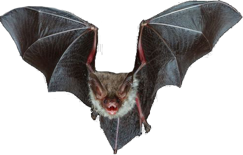

Across all 5 years, raccoons make up the highest percentage of rabid animals accounted for in MA.
Bats, which are common carriers of rabies and often leave undetected bites, accounted for a smaller percentage than raccoons or foxes. That may be because they are harder to catch, however. 
We can also look at the percentages of each animal as layers, to get a better sense of how the percentages compare to eachother.
It's pretty clear that raccoons, skunks, and bats have pretty equally shared a large portion of the rabid animal pool in MA.
What if we took a look at the ratio of reported animals to rabid animals across all 4 years?
Each year, around 400 to 500 dogs are submitted for rabies testing, but none have been found rabid. Dog owners must comply with the mandatory rabies shots required by Massachusetts law for cats and dogs.
However, any dog involved in a biting incident must be quarantined for 10 days. An animal control officer will determine during this period of observation whether the dog needs rabies treatment.
Around 600-700 cats are submitted for rabies testing each year. Cats can be left outside to roam, and are thus exposed more frequently to common carriers of rabies such as raccoons, foxes, and bats.
Bats are by the far the most submitted animal for rabies testing. Around 900-1000 bats are submitted each year.
Bats are known as (and possibly sensationalized as) rabies carriers, which would attribute to the high number of submitted bats. It is also better to err on the side of caution with bats because their bites can go undetected.